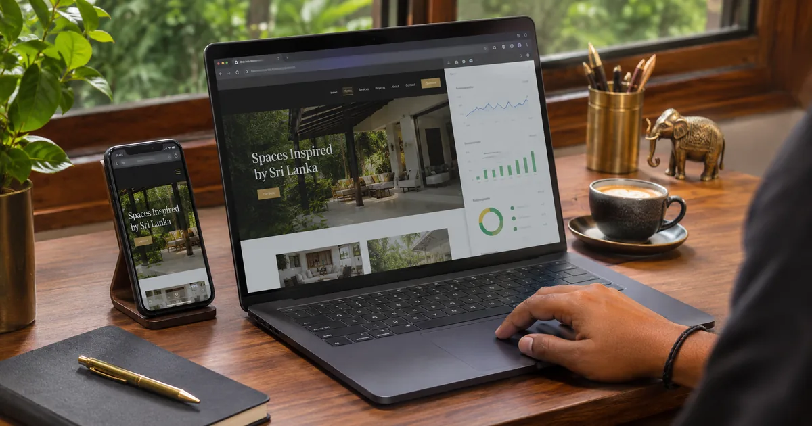

Key takeaways
- SEO is far cheaper to build in from the start than to fix after launch.
- Focus on four areas: speed and mobile, page structure, technical setup and conversion and local signals.
- Plan every page around a real search keyword before design begins.
- Connect Google Search Console on launch day so you can see how Google reads your site.
Most websites are designed to look good and then "SEO-optimised" later, if ever. That order is backwards. Many of the factors that decide whether a page can rank, such as structure, speed, URLs and headings, are fixed while the site is being designed and built. Changing them later means redesigning. This checklist covers the 15 things we build into every website before launch.

Speed and mobile (items 1–3)
1. Mobile-first responsive layout
Google indexes the mobile version of your site first, and most Sri Lankan visitors use phones. Design the mobile layout first: readable text without zooming, large tap targets and a simple menu.
2. Fast loading (Core Web Vitals)
Core Web Vitals measure how quickly the main content appears, how quickly the page responds to taps, and whether things jump around while loading. Lightweight custom code, compressed images and few third-party scripts make the biggest difference. Our Core Web Vitals case study shows what fixing these can do.
3. HTTPS / SSL
Every page must load over HTTPS. Browsers warn visitors about sites without it, and Google treats HTTPS as a signal. All of our website packages include a free SSL certificate.
Page structure and content (items 4–7)
4. Clean, readable URLs
Use short, descriptive URLs such as /web-design-sri-lanka rather than /page?id=123. Decide them before launch, because changing URLs later needs redirects.
5. One H1 and a logical heading order
Each page needs one clear H1 that matches its main keyword, followed by H2 and H3 subheadings that break the content into sections. This helps both readers and search engines.
6. Unique title and meta description for every page
The title tag is the blue link people see on Google. Keep it under about 60 characters, put the main keyword near the start, and write a meta description that makes people want to click. Our on-page SEO guide goes deeper.
7. Optimised images with alt text
Save images in WebP format at the size they are displayed, add width and height to prevent layout shift, lazy-load images further down the page, and describe each one in its alt text.
Technical setup (items 8–10)
8. Schema markup
Structured data tells Google exactly what a page is about: your business, services, FAQs, articles or products. It can unlock rich results and also helps AI search tools understand your business. Learn more in our AI SEO guide.
9. XML sitemap and robots.txt
A sitemap lists every page you want indexed, and robots.txt tells crawlers which areas to skip. Submit the sitemap to Google Search Console on launch day.
10. Internal links
Link related pages to each other with descriptive anchor text, the way this article links to our website cost guide and to static vs dynamic websites. Internal links help Google find pages and understand which ones matter most.
Local signals and conversions (items 11–13)
11. Google Business Profile and consistent NAP
Your business name, address and phone number (NAP) should be identical on the website, Google Business Profile and every directory. Consistency builds trust for Google Maps rankings.
12. Click-to-call and WhatsApp buttons
Rankings only matter if visitors contact you. Put clear call and WhatsApp buttons where people expect them, especially on mobile.
13. Google Search Console and Analytics
Search Console shows which searches bring people to your site and alerts you to errors. Analytics shows what visitors do once they arrive. Set both up on launch day.
Planning and accessibility (items 14–15)
14. Accessible colours and tap targets
Good contrast, readable font sizes and buttons large enough to tap help every visitor, and they line up with Google's page experience signals.
15. A keyword-mapped page plan
Before design starts, map each page to one main search term. A "Services" page that tries to rank for everything usually ranks for nothing. Separate pages for each main service work much better. This planning step is the core of how we approach SEO-ready web design in Sri Lanka.
After launch: what next?
An SEO-friendly website gives you a strong foundation, but rankings for competitive keywords still take time and ongoing work. Read how long SEO takes for realistic timelines. For an existing site, an SEO audit will show which of these 15 items are missing. If you are still choosing a designer, use this list alongside our guide to choosing a web design company.
Get a website built to rank
Every website we build follows this checklist, from LKR 10,000 with free hosting and SSL for the first year.

Buddhika S Weerasekara is an SEO consultant and web designer in Sri Lanka who builds fast, search-ready websites for local and international businesses. More about Buddhika.